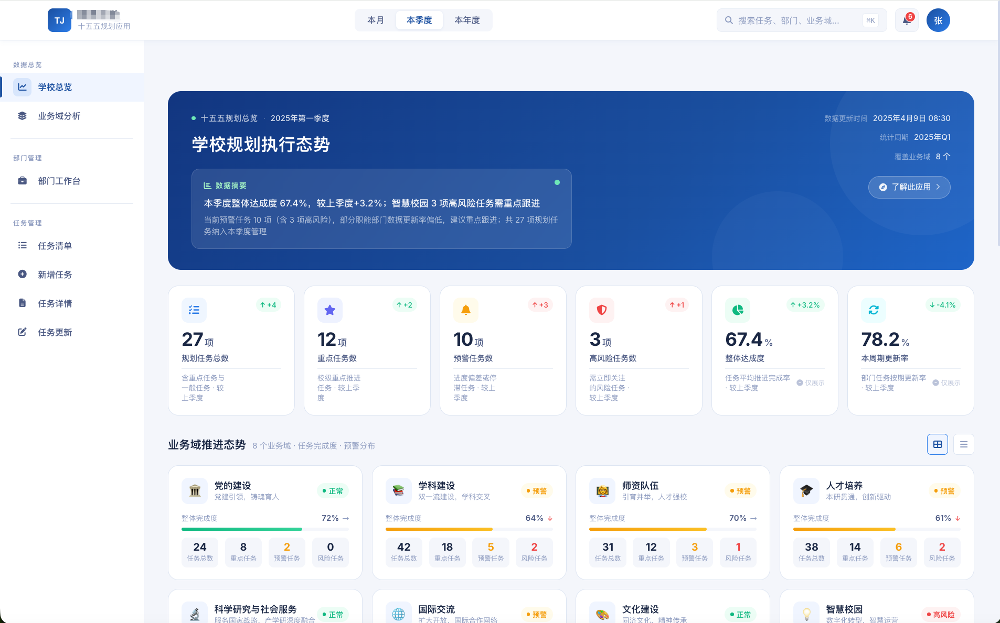
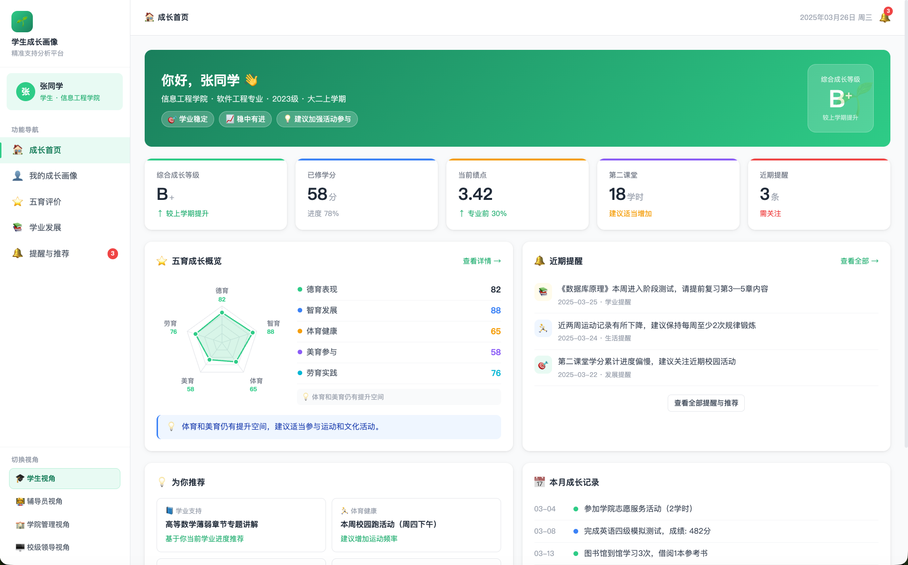
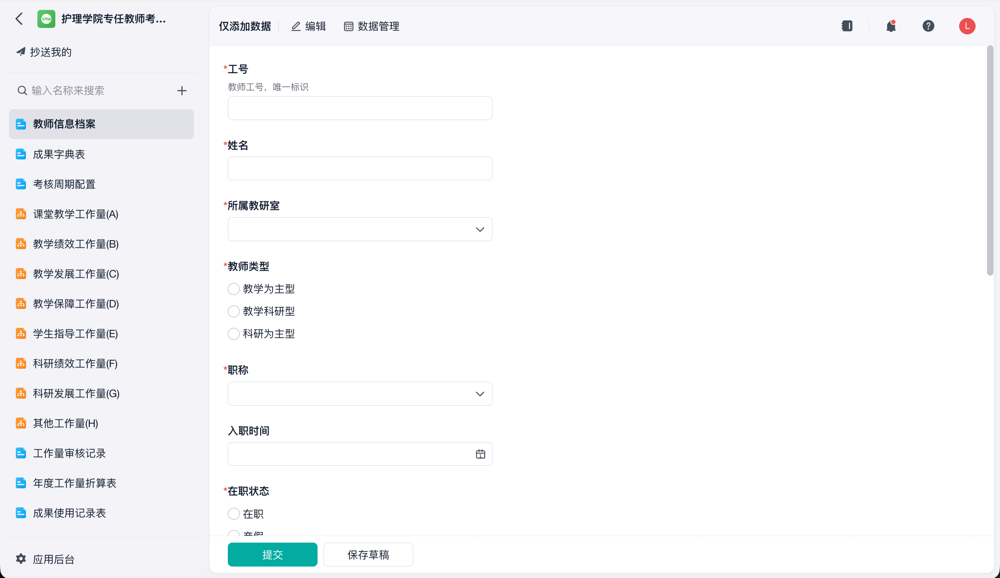
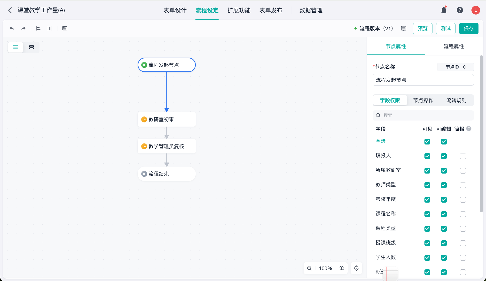
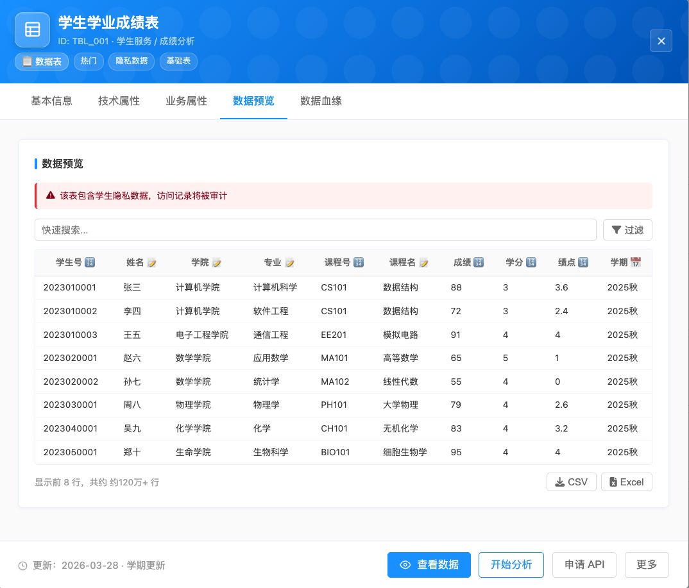
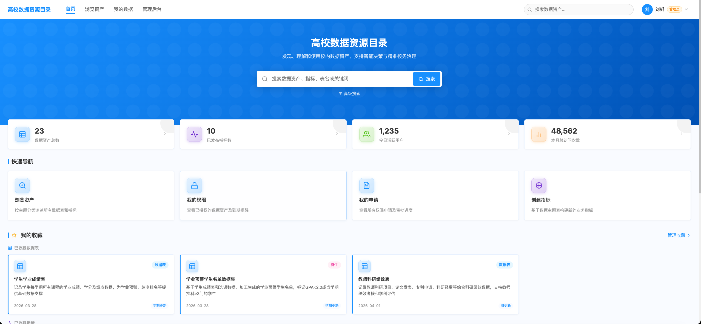
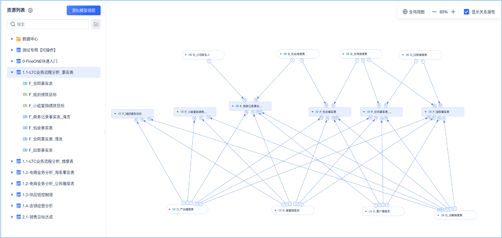
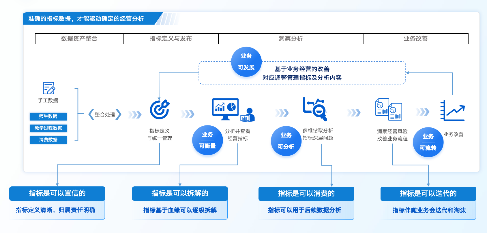

页面导航
点击任意页面跳转，按 ESC 关闭
从Vibe Coding
到生产环境级落地
数据生产 × 数据消费 — 高校AI应用的两条路径
帆软软件 · 刘韬
2026年7月
让数据成为生产力
产品矩阵
部分合作客户示例（排名不分先后）
AI技术的跃进速度，超出想象
大模型、开发工具、技术框架层出不穷，Vibe Coding只是冰山一角。
一段自然语言描述，AI就能生成完整应用——前端、后端、数据库一气呵成。
AI似乎可以完成一切。


十五五规划应用
但生产环境，有更真实的考量。
AI生成单个模块没问题，但系统规模扩大后，风险显著放大。
意图传递的确定性
AI是否每次都正确理解了需求？多功能堆叠后，"漏执行""误理解"的概率显著上升。
代码审核的边际成本
AI生成快，但人review的成本呢？系统规模扩大后，审核工作量可能超过传统开发。
跨模块协同的一致性
10个模块各自正确 ≠ 协同正确。AI缺乏全局心智模型，跨模块协同是核心风险。
长期演进的可控性
业务规则变更时，AI修改一处可能影响多处，缺乏影响面分析能力。
问题不在于AI"能不能做"，而在于"做得对不对、能不能审、审不审得起"。
AI能力是共性的，
差异在于落地到哪里
大模型的理解能力已经足够强大。我们不是否定AI，而是思考：如何让AI站在坚实的平台上。
Vibe Coding 路径
AI + 裸代码
• 意图传递不确定
• 审核成本高
• 跨模块协同难
• 代码不可维护
• 安全性无保障
• 长期演进不可控
• 换人接手困难
我们的路径
AI + 企业级平台
• 平台规范约束产出
• 业务人员可自主调整
• 数据互通，权限同步
• 代码可审查可追溯
• 安全底座内置
• 版本管理可控
• 标准化数据资产
大模型能力 × 成熟平台能力 = 生产环境可用的AI应用
Jander
简道云智能体
让碎片化业务需求
高效转化为标准化系统
• 零代码+AI，超越零代码
• 自然语言驱动，对话即构建
• 平台规范保障，天然安全
• 业务人员可自主调整

"把管理办法说一遍，系统就跑起来了"
Vibe Coding vs Jander：同一个起点，不同的终点
AI理解需求的能力是相同的，差异在于"落地到哪里"
Vibe Coding
产出：独立代码
Jander
产出：简道云应用
Jander = AI的需求理解能力 + 简道云的企业级平台能力
案例：学院专任教师量化绩效考核系统
五大核心复杂度：
Jander的实现路径
自然语言 → AI理解 → 自动生成

效果展示
业务人员全程参与，系统完整可用
覆盖范围
业务人员全程参与 · 系统完全符合管理办法 · 业务自主掌控可调整


Jander让业务系统高效运转，数据规范地产生出来了。
但数据本身不会说话。
怎么把这些数据变成
可信赖 的决策依据？
数据来源
稳定
口径标准
一致
权限管控
清晰
─── 这是数据消费的问题 ───
为什么单纯AI报告不够？
有动手能力的老师，用CLI+大模型+Excel也能做出漂亮报告。
差异不在"AI能不能分析"，而在数据资产是否具备生产级特征
指标中心+AI，基于规范化数据资产，结果可信赖。

要做出生产级的、口径清晰的分析应用，需要的不仅仅是强大的AI模型
还需要——
统一可信的数据标准
指标口径一致，数据资产可管理、可追溯
AI驱动的智能代理
多种数字员工，按需调用，自动完成分析任务
可靠完善的治理机制
Agent编排、skill体系、知识库管理、用户记忆
灵活的场景适配
不同业务场景创建专属Agent，按需定制
Dora · 企业级数据智能体平台架构
人才发展分析
人才队伍现状梳理
对标同级高校梯队
科研产出分析
论文/专利/项目产出
成果转化对标分析
招生预警监测
招生态势实时监控
异常指标自动预警
日报定时推送
关键数据定时汇总
自动推送给相关人
问数Agent
自然语言查询
NL2SQL转换
报告Agent
自动生成分析报告
支持0-1报告
预警Agent
阈值监测
异常检测推送
推送Agent
定时调度
消息自动推送
自定义Agent
按需创建
灵活扩展
Agent编排引擎
创建发布 · 流程编排
多Agent协同 · 版本回滚
知识库
业务知识沉淀
同义词映射 · 语境增强
技能系统 SkillHub
技能包导入管理
数据查询 · 统计分析
安全管控
数据权限 · 操作审计
合规检查 · 敏感脱敏
指标中心
统一指标定义
口径规范 · 血缘追溯
FineBI
分析主题接入
仪表板数据源
Excel / 文件
xls/xlsx导入
定时刷新 · 语义配置
外部API
RESTful对接
教育部 · 学术数据库
指标中心：构建统一的数据语义层
FineBI 7.0核心能力 · 让AI面向的数据资产可信赖
统一指标定义
所有业务指标在指标中心统一定义、统一口径
资产规范化管理
指标血缘追溯、数据来源标注、计算逻辑透明
AI面向可信数据
Dora Agent接入经过指标中心治理的数据资产
报告稳定有价值
相同需求不同时间生成，结果一致可复用
关键价值：不是AI能力不够，而是数据资产不够规范。有了统一指标层，AI才能产出可信赖的分析成果。



行业数据分析报告Agent的配置流程
Dora平台Agent配置示例，5个步骤构建专属分析Agent
模型选择
提示词
数据配置
知识配置
Skill
模型选择
DeepSeek-V4
Qwen-2.5-235B
MiMo-V2.5Pro
GLM-5.2
提示词配置
角色定义
能力边界
输出格式
分析框架
数据配置
FineBI分析主题
Excel文件
外部数据源
指标中心治理数据
知识配置
业务术语
评价标准
历史案例
内部文件
Skill配置
数据查询
统计分析
报告生成
质量验收